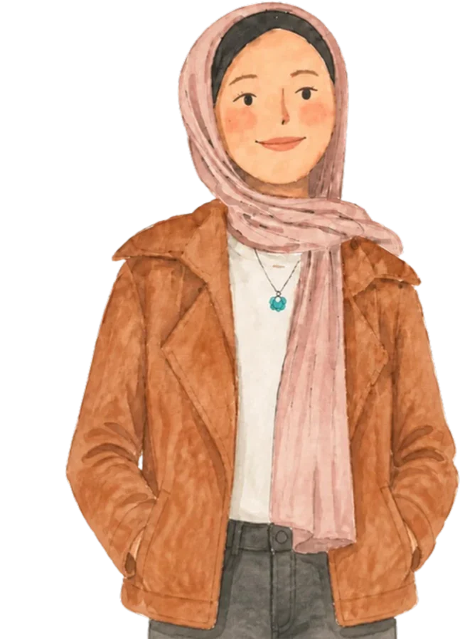

01 مرسم ألوان مائية · غزة
نرسمُ بالماء ونطبعُ الرسمةَ على كلِّ شيء
كل قطعة مرسومة باليد
انزلوا
02 البداية
تبدأ كلُّ قطعةٍ بفرشاةٍ وورقةٍ وكأسِ ماء. رسمتها فرح بين بيتٍ ونزوحٍ وعودة، ثم خرجت من المرسم لتعيش معكم: على حائطٍ، في دفترٍ، وعلى كتف.
03 من دفتر فرح
اللوحات الأصلية
04 من الورقة إلى البيت
لوحةٌ واحدة،
حيواتٌ كثيرة
01
05 المتجر


06 الحكاية
أنا فرح. أرسمُ منذ الرابعة عشرة، ورافقني دفترُ الرسم في كلِّ نزوح. Mass & Grass بيتي الصغير الذي أبنيه من غزة.
اقرأوا الحكاية